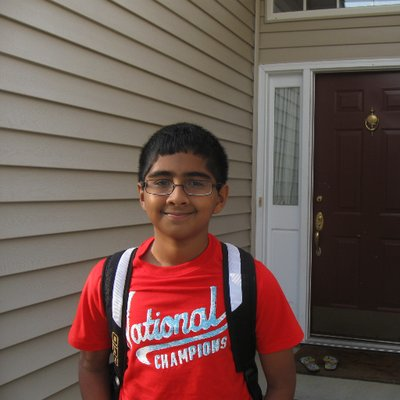

About
My name is Rohan Akki and I have been part of FIRST for over 8 years. I participated in FLL from the fourth grade up to the eighth grade before graduating onto FTC. There, I spent four years coding while also mentoring FLL teams at the Greensboro Science Center. I have a lot of experience in programming for FTC scale robotics, as well as relevant control theory that my team and I put to use during my senior year.
This site is the culmination of most of the work I've put into coding my four years of FTC.